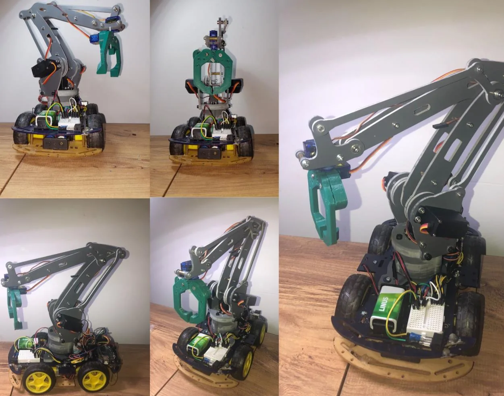
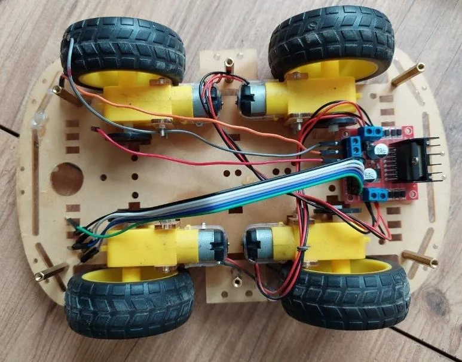
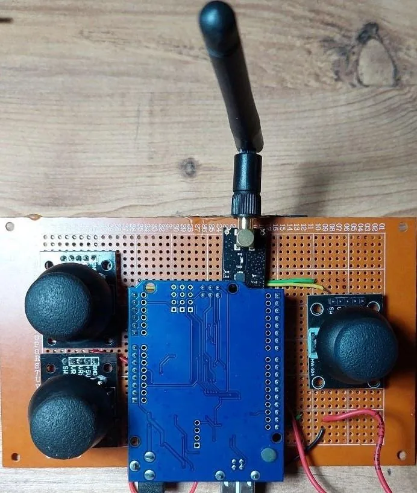
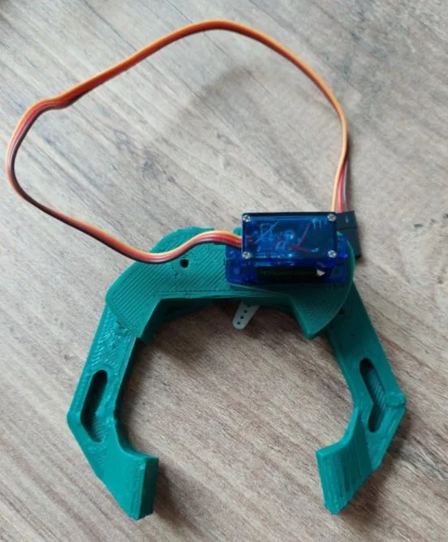
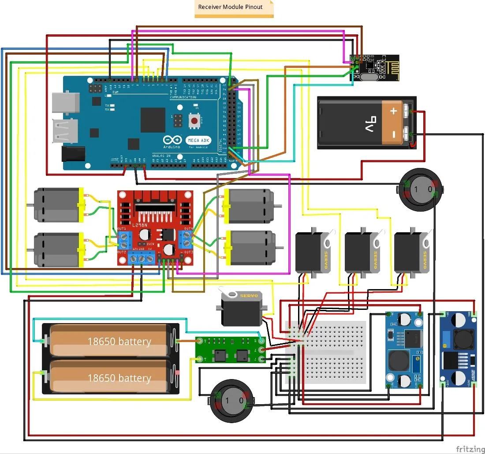

05 · Embedded · Hardware integration
Remotely Controlled Robotic Manipulator
BSc senior design. Integrate a commercial 4-axis desktop arm with a self-built 4WD mobile platform into one system an operator drives wirelessly by joystick, with a 3D-printed gripper as the end effector.

What I claim, and what I do not
I contributed across the Arduino control software in C++, system integration and troubleshooting, and to the technical report. The four-way task split was never documented, so everything on this page is described as team work.
What the project was given
Four people, one semester, at Tbilisi State University in 2023. The brief was to put a commercial 4-axis desktop arm onto a self-built 4WD platform and make the whole thing drivable by a single operator over a wireless link.
The arm was a purchased commercial unit and stayed that way. The platform, the drive electronics, the control software and the gripper are the team's work. The parts on the bench were an Arduino Uno at the transmitter and an Arduino Mega on the vehicle, an L298N dual H-bridge for the four drive motors, servos on the arm joints, joystick modules, 18650 cells, and a 3D printer for the gripper.
What the goal was
The brief was to build and operate the integrated system. No target was set for positional accuracy, range, payload or response time, so there is no threshold for the outcome below to be read against.
What the team did
The build ran as an eight-stage sequence, and each subsystem was made to work before it was integrated into the next one: servos driven from potentiometers before joystick control, joystick control before the wireless link, and the wireless link proven before the arm was mounted on the platform. That ordering is the reason faults stayed findable.
The wireless layer was chosen rather than defaulted into. NRF24L01 2.4 GHz modules were selected over an ESP-01 Wi-Fi module and an HC-06 Bluetooth module, on range and Arduino compatibility.
The gripper was designed and 3D-printed by the team because nothing off the shelf fitted the arm's end effector.
I contributed to the Arduino control software in C++, to system integration and troubleshooting, and to the technical report. Which subsystem belonged to which of the four of us was never written down at the time, so nothing here is attributed to one person.


What went wrong, and the fix
The defining problem on this project was electrical, not mechanical. With the motors running, current draw pulled the supply voltage down far enough that the Arduino behaved unpredictably and reset. A robot that reboots when it accelerates looks like a control fault, and chasing it as one would have cost us the semester.
We traced it to the motors and the logic sharing a single supply, and split the power domains with a second battery, so motor transients no longer reach the microcontroller. The system ran reliably afterwards. FIG 05 is the receiver-side schematic and the two separate batteries in it are the fix.


What the result was
The integrated system worked end to end: an operator drove the platform and the arm from a handheld controller over the 2.4 GHz link, and the gripper picked things up.
It was never characterised in numbers. The report contains an experimental chapter describing a method for positional accuracy, repeatability and response time, but reports no values for any of them. The one chapter carrying numbers is the power budget, and its figures contradict each other, so nothing from it is published here.
What was not overcome
Accuracy and latency, the two numbers a robotics reader would want first, were never produced, and the hardware is no longer available to go back and measure them.
The report also names a wireless standard for the link that the radio module does not implement. That claim is wrong and is not repeated here.
Scope and limitations
- No measured accuracy, latency or power figure is published. The system worked; it was never characterised in a way that produced usable numbers.
- Four-person team with no documented task split. Everything is described as team work.
- The 4-axis arm was a commercial unit. The team integrated it, it did not design it.
- Open-loop operator control throughout. No autonomy, no sensing and no feedback control.
- 2023 work, and the oldest project on this site by three years.